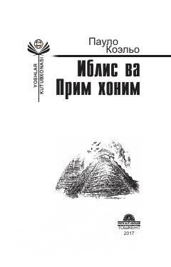

IVPaulo Koelyo qalamidagi falsafiy romanlar — taqdir, orzu va insoniy kurash haqida.
Bu kitob mashhur braziliyalik yozuvchi Paulo Koelyo qalamiga mansub 'Iblis va Prim xonim' va 'Alkimyogar' romanlarini o'z ichiga oladi. Asarlarda ezgulik va yovuzlik, sabr va nafs, muhabbat va nafrat, iymon va gunoh kabi umuminsoniy mavzular badiiy tarzda yoritiladi. Kitob rus tilidan Aziz Said va Ulug'bek Doliyevlar tomonidan o'zbek tiliga tarjima qilingan.